Last updated: 2026-11-05
Live track record: 1120 closed picks, 33% win rate. Full track record →
| Ticker | Sector | Dir | Price | RSI(7) | % vs 20D | Volume | Entry | Stop | Target | R:R | Avg Hold | Probability | Hist. win rate | Sample | Earnings |
|---|---|---|---|---|---|---|---|---|---|---|---|---|---|---|---|
| FIX | Industrials | LONG | $967.93 | 22.6 | -28.6% | 2.06x 🔥 | $967.93 | $919.53 | $1356.35 | 8.03:1 | 6.7 | 28% | 58% | 12 | 105d |
| FTNT | Information Technology | LONG | $121.96 | 16.4 | -26.2% | 0.81x | $121.96 | $115.86 | $165.31 | 7.11:1 | 8.9 | 47% | 70% | 10 | 91d |
| LRCX | Information Technology | LONG | $188.85 | 15.7 | -26.1% | 1.69x 🔥 | $188.85 | $179.4 | $255.44 | 7.05:1 | 5.0 | 27% | 57% | 7 | 83d |
| FFIV | Information Technology | LONG | $310.79 | 12.8 | -25.5% | 0.89x | $310.79 | $295.25 | $417.08 | 6.84:1 | 8.5 | 27% | 50% | 8 | 82d |
| MU | Information Technology | LONG | $671.75 | 19.7 | -25.1% | 2.21x 🔥 | $671.75 | $638.16 | $896.7 | 6.7:1 | 9.0 | 34% | 64% | 11 | 48d |
| KEYS | Information Technology | LONG | $260.99 | 17.4 | -20.7% | 0.98x | $260.99 | $247.94 | $329.24 | 5.23:1 | 8.8 | 37% | 67% | 9 | 14d |
| ILMN | Health Care | LONG | $209.15 | 24.3 | -20.3% | 1.42x | $209.15 | $198.69 | $262.32 | 5.08:1 | 7.0 | 55% | 55% | 11 | 91d |
| KLAC | Information Technology | LONG | $132.23 | 23.3 | -18.7% | 1.33x | $132.23 | $125.62 | $162.6 | 4.59:1 | 4.0 | 32% | 62% | 8 | 84d |
| NRG | Utilities | LONG | $79.75 | 18.5 | -17.7% | 1.9x 🔥 | $79.75 | $75.76 | $96.91 | 4.3:1 | 5.9 | 41% | 71% | 17 | 4d |
| PWR | Industrials | LONG | $511.8 | 28.2 | -16.9% | 2.51x 🔥 | $511.8 | $486.21 | $615.73 | 4.06:1 | 6.7 | 28% | 58% | 12 | 105d |
| FISV | Financials | SHORT | $62.37 | 90.8 | 24.6% | 1.14x | $62.37 | $65.49 | $50.04 | 3.95:1 | 8.6 | 41% | 71% | 7 | 97d |
| JBL | Information Technology | LONG | $238.3 | 21.8 | -15.2% | 1.57x 🔥 | $238.3 | $226.39 | $281.12 | 3.59:1 | 8.3 | 28% | 58% | 12 | 41d |
| ETN | Industrials | LONG | $328.6 | 27.3 | -15.1% | 1.68x 🔥 | $328.6 | $312.17 | $387.09 | 3.56:1 | 11.8 | 33% | 63% | 19 | 89d |
| MPC | Energy | LONG | $383.24 | 19.6 | -15.0% | 1.02x | $383.24 | $364.08 | $451.11 | 3.54:1 | 10.4 | 73% | 73% | 11 | 89d |
| NVDA | Information Technology | LONG | $182.37 | 17.3 | -14.7% | 2.13x 🔥 | $182.37 | $173.25 | $213.72 | 3.44:1 | 7.4 | 41% | 71% | 14 | 12d |
| BKR | Energy | LONG | $46.86 | 19.8 | -14.3% | 1.44x | $46.86 | $44.52 | $54.69 | 3.34:1 | 11.7 | 20% | 50% | 12 | 81d |
| VLO | Energy | LONG | $355.83 | 24.2 | -14.3% | 0.97x | $355.83 | $338.04 | $415.04 | 3.33:1 | 10.4 | 71% | 71% | 7 | 84d |
| GEV | Industrials | LONG | $772.0 | 30.1 | -13.8% | 1.85x 🔥 | $772.0 | $733.4 | $895.74 | 3.21:1 | 8.6 | 28% | 58% | 12 | 83d |
| MOS | Materials | SHORT | $22.17 | 78.6 | 18.3% | 1.16x | $22.17 | $23.28 | $18.74 | 3.1:1 | 7.8 | 53% | 53% | 17 | 110d |
| FCX | Materials | LONG | $57.97 | 18.1 | -13.3% | 1.85x 🔥 | $57.97 | $55.08 | $66.85 | 3.06:1 | 6.6 | 20% | 50% | 16 | 77d |
| GEN | Information Technology | SHORT | $30.37 | 79.5 | 17.7% | 0.84x | $30.37 | $31.89 | $25.8 | 3.01:1 | 7.6 | 46% | 54% | 13 | 91d |
| PNR | Industrials | SHORT | $69.27 | 72.4 | 17.5% | 0.54x | $69.27 | $72.73 | $58.95 | 2.98:1 | 13.5 | 43% | 50% | 4 | 89d |
| ROP | Information Technology | SHORT | $492.82 | 87.7 | 16.5% | 1.31x | $492.82 | $517.46 | $423.13 | 2.83:1 | 7.2 | 20% | 50% | 10 | 82d |
| AVGO | Information Technology | LONG | $295.64 | 25.7 | -11.9% | 1.61x 🔥 | $295.64 | $280.86 | $335.72 | 2.71:1 | 5.6 | 20% | 50% | 16 | 34d |
| IDXX | Health Care | SHORT | $665.89 | 68.6 | 15.6% | 0.81x | $665.89 | $699.18 | $576.14 | 2.7:1 | 8.7 | 34% | 64% | 11 | 88d |
| TT | Industrials | LONG | $395.89 | 21.3 | -11.6% | 1.09x | $395.89 | $376.1 | $447.72 | 2.62:1 | 11.2 | 36% | 59% | 17 | 84d |
| JCI | Industrials | LONG | $132.15 | 26.0 | -11.5% | 1.44x | $132.15 | $125.55 | $149.31 | 2.6:1 | 13.3 | 60% | 90% | 10 | 90d |
| CMG | Consumer Discretionary | SHORT | $35.12 | 82.6 | 14.9% | 0.58x | $35.12 | $36.88 | $30.57 | 2.59:1 | 9.7 | 60% | 68% | 19 | 96d |
| GOOGL | Communication Services | LONG | $284.41 | 27.6 | -11.4% | 1.07x | $284.41 | $270.19 | $320.88 | 2.56:1 | 8.3 | 35% | 50% | 14 | 90d |
| CSCO | Information Technology | LONG | $95.78 | 21.6 | -11.3% | 1.22x | $95.78 | $90.99 | $108.03 | 2.56:1 | 7.0 | 44% | 67% | 6 | 7d |
| ROK | Industrials | LONG | $382.31 | 21.4 | -11.3% | 2.18x 🔥 | $382.31 | $363.19 | $431.22 | 2.56:1 | 7.6 | 39% | 69% | 13 | unknown |
| IBKR | Financials | LONG | $72.86 | 27.6 | -10.9% | 1.55x 🔥 | $72.86 | $69.22 | $81.82 | 2.46:1 | 9.8 | 43% | 73% | 11 | 82d |
| GOOG | Communication Services | LONG | $283.56 | 27.8 | -10.8% | 1.11x | $283.56 | $269.38 | $317.9 | 2.42:1 | 7.0 | 35% | 50% | 14 | 90d |
| TYL | Information Technology | SHORT | $428.78 | 81.1 | 13.7% | 1.21x | $428.78 | $450.22 | $377.04 | 2.41:1 | 12.7 | 48% | 78% | 9 | 97d |
| WMB | Energy | LONG | $64.06 | 23.1 | -10.7% | 1.21x | $64.06 | $60.86 | $71.77 | 2.41:1 | 9.5 | 77% | 100% | 10 | 96d |
| PSX | Energy | LONG | $250.9 | 24.2 | -10.7% | 1.1x | $250.9 | $238.36 | $280.83 | 2.39:1 | 11.6 | 70% | 70% | 10 | 90d |
| CLX | Consumer Staples | SHORT | $99.01 | 85.8 | 13.3% | 0.61x | $99.01 | $103.97 | $87.36 | 2.35:1 | 9.9 | 67% | 82% | 11 | 89d |
| GEHC | Health Care | SHORT | $82.8 | 73.8 | 13.2% | 0.91x | $82.8 | $86.94 | $73.14 | 2.33:1 | 8.6 | 45% | 75% | 16 | 90d |
| LOW | Consumer Discretionary | SHORT | $227.75 | 78.7 | 13.1% | 0.91x | $227.75 | $239.14 | $201.3 | 2.32:1 | 10.2 | 37% | 67% | 9 | 13d |
| ADM | Consumer Staples | LONG | $70.31 | 14.0 | -10.3% | 0.94x | $70.31 | $66.79 | $78.4 | 2.3:1 | 8.4 | 70% | 100% | 7 | 89d |
| CVS | Health Care | LONG | $80.46 | 24.7 | -10.3% | 1.37x | $80.46 | $76.44 | $89.72 | 2.3:1 | 7.2 | 20% | 50% | 12 | 96d |
| JKHY | Financials | SHORT | $179.87 | 85.4 | 12.9% | 0.92x | $179.87 | $188.86 | $159.3 | 2.29:1 | 7.8 | 20% | 50% | 16 | 89d |
| EFX | Industrials | SHORT | $195.05 | 75.0 | 12.8% | 0.49x | $195.05 | $204.81 | $172.85 | 2.28:1 | 5.7 | 70% | 85% | 13 | 90d |
| NWS | Communication Services | LONG | $29.27 | 27.4 | -10.2% | 1.56x 🔥 | $29.27 | $27.81 | $32.6 | 2.28:1 | 6.6 | 44% | 67% | 15 | 91d |
| CEG | Utilities | LONG | $238.81 | 28.5 | -10.2% | 1.46x | $238.81 | $226.87 | $265.84 | 2.26:1 | 10.6 | 20% | 50% | 16 | 4d |
| APH | Information Technology | LONG | $72.11 | 32.0 | -9.9% | 1.27x | $72.11 | $68.5 | $79.99 | 2.19:1 | 7.7 | 58% | 73% | 15 | 83d |
| ROL | Industrials | SHORT | $38.58 | 83.5 | 12.2% | 0.76x | $38.58 | $40.5 | $34.37 | 2.18:1 | 8.8 | 40% | 62% | 13 | 97d |
| NWSA | Communication Services | LONG | $26.91 | 27.2 | -9.7% | 1.81x 🔥 | $26.91 | $25.56 | $29.8 | 2.15:1 | 7.7 | 49% | 64% | 14 | 91d |
| CPRT | Industrials | SHORT | $32.19 | 72.3 | 11.4% | 0.86x | $32.19 | $33.79 | $28.88 | 2.05:1 | 9.3 | 69% | 69% | 13 | 14d |
| APA | Energy | LONG | $44.33 | 25.2 | -9.2% | 1.0x | $44.33 | $42.11 | $48.81 | 2.02:1 | 8.7 | 70% | 70% | 10 | 111d |
| LEN | Consumer Discretionary | SHORT | $91.23 | 66.3 | 11.2% | 0.67x | $91.23 | $95.79 | $82.05 | 2.01:1 | 9.8 | 59% | 82% | 11 | 40d |
LONG = oversold, expected to bounce back up toward the 20-day average. SHORT = overbought, expected to pull back down toward the 20-day average. Stop-loss = 5% against the position. Probability = this ticker's historical win rate minus penalties when the chart structure is broken (hover for reasons). 🔥 means volume was 1.5x+ the 20-day average. Tickers with earnings due within 3 days are excluded. Macro events pulled live from a public economic calendar feed (high-impact USD events only). Mechanical screen only — check news before acting. Not financial advice.
Probability 58% → 28%: broke below 60d swing low (-15); below 200-day avg, downtrend (-8); lower highs and lower lows (-7)
Earlier signals on FIX: 2026-11-04: ❌ hit stop -5.0% 2026-11-03: ❌ hit stop -12.6% 2026-11-02: ❌ hit stop -7.1%
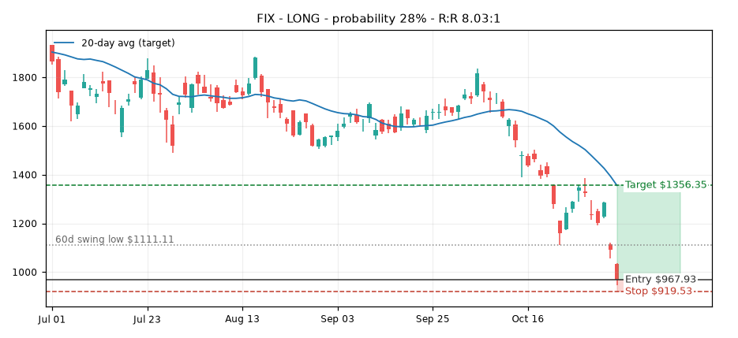
Probability 70% → 47%: broke below 60d swing low (-15); below 200-day avg, downtrend (-8)
Earlier signals on FTNT: 2026-11-04: ❌ hit stop -5.0% 2026-11-03: ⏳ still open 2026-11-02: ⏳ still open
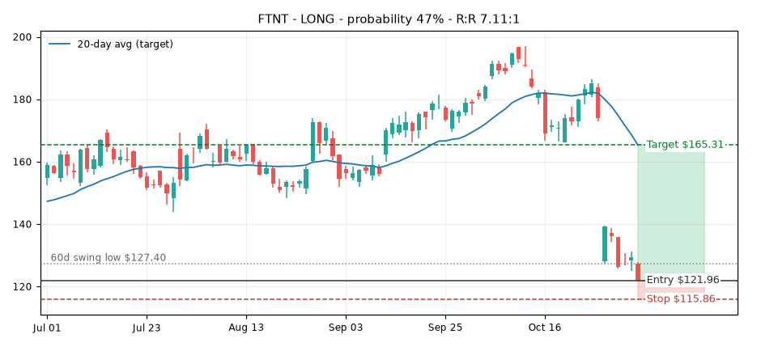
Probability 57% → 27%: broke below 60d swing low (-15); below 200-day avg, downtrend (-8); lower highs and lower lows (-7)
Earlier signals on LRCX: 2026-11-04: ❌ hit stop -5.6% 2026-11-03: ❌ hit stop -9.1% 2026-11-02: ❌ hit stop -8.6%
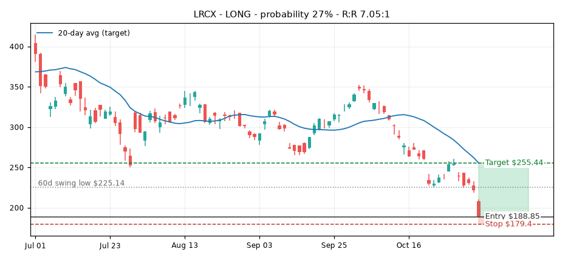
Probability 50% → 27%: broke below 60d swing low (-15); below 200-day avg, downtrend (-8)
Earlier signals on FFIV: 2026-11-04: ❌ hit stop -5.0% 2026-11-03: ❌ hit stop -5.0% 2026-11-02: ⏳ still open
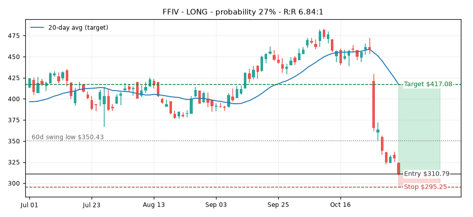
Probability 64% → 34%: broke below 60d swing low (-15); below 200-day avg, downtrend (-8); lower highs and lower lows (-7)
Earlier signals on MU: 2026-11-04: ❌ hit stop -5.6% 2026-11-02: ❌ hit stop -5.0% 2026-10-23: ✅ hit target +11.7%
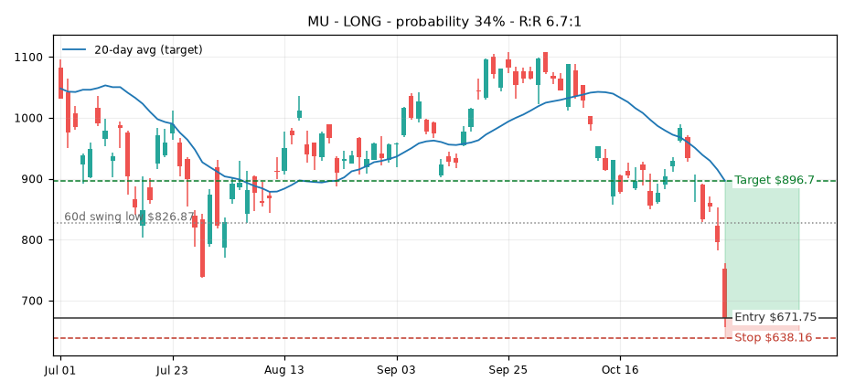
Probability 67% → 37%: broke below 60d swing low (-15); below 200-day avg, downtrend (-8); lower highs and lower lows (-7)
Earlier signals on KEYS: 2026-11-04: ❌ hit stop -5.0% 2026-11-03: ❌ hit stop -5.0% 2026-11-02: ❌ hit stop -5.0%
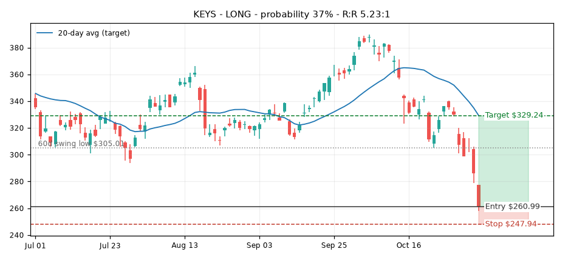
Probability 55%: no structure warnings.
Earlier signals on ILMN: 2026-11-04: ❌ hit stop -5.0% 2026-11-03: ❌ hit stop -5.0% 2026-11-02: ❌ hit stop -5.0%
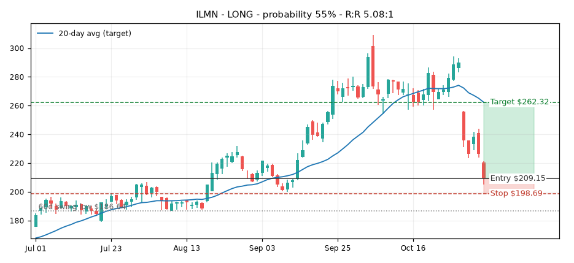
Probability 62% → 32%: broke below 60d swing low (-15); below 200-day avg, downtrend (-8); lower highs and lower lows (-7)
Earlier signals on KLAC: 2026-11-04: ❌ hit stop -5.0% 2026-11-02: ❌ hit stop -7.2% 2026-10-30: ❌ hit stop -5.0%
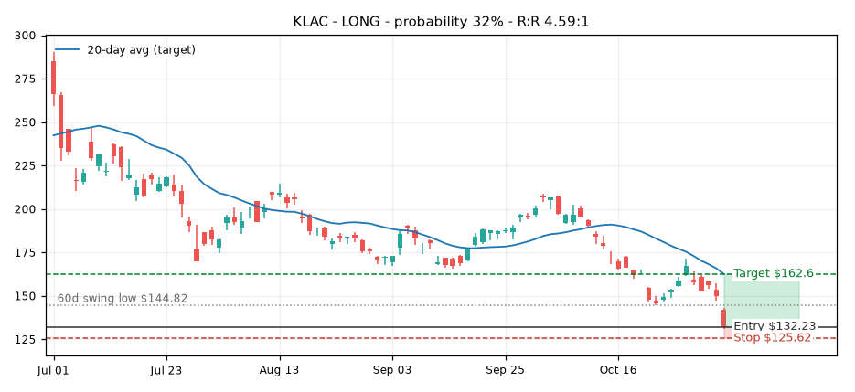
Probability 71% → 41%: broke below 60d swing low (-15); below 200-day avg, downtrend (-8); lower highs and lower lows (-7)
Earlier signals on NRG: 2026-11-04: ❌ hit stop -5.0% 2026-10-02: ✅ hit target +10.0% 2026-10-01: ✅ hit target +10.2%
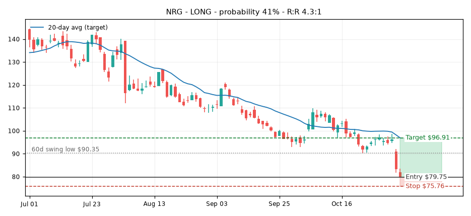
Probability 58% → 28%: broke below 60d swing low (-15); below 200-day avg, downtrend (-8); lower highs and lower lows (-7)
Earlier signals on PWR: 2026-10-23: ✅ hit target +17.7% 2026-10-22: ✅ hit target +18.2% 2026-10-20: ❌ hit stop -5.0%
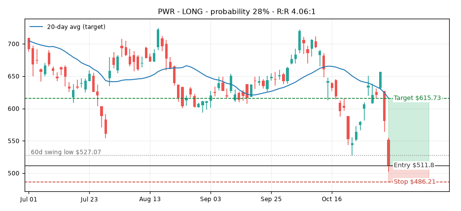
Probability 71% → 41%: broke above 60d swing high (-15); above 200-day avg, uptrend (-8); higher highs and higher lows (-7)
Earlier signals on FISV: 2026-11-04: ⏳ still open 2026-11-03: ❌ hit stop -5.0%
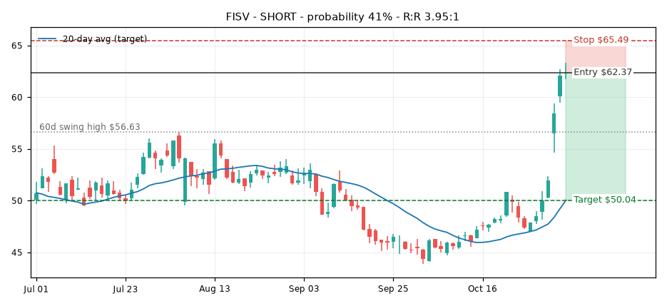
Probability 58% → 28%: broke below 60d swing low (-15); below 200-day avg, downtrend (-8); lower highs and lower lows (-7)
Earlier signals on JBL: 2026-11-04: ❌ hit stop -5.0% 2026-10-22: ❌ hit stop -5.0% 2026-09-02: ✅ hit target +10.5%
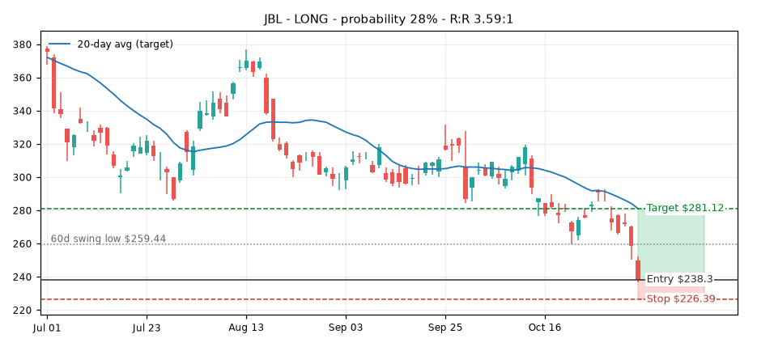
Probability 63% → 33%: broke below 60d swing low (-15); below 200-day avg, downtrend (-8); lower highs and lower lows (-7)
Earlier signals on ETN: 2026-11-04: ❌ hit stop -5.0% 2026-10-23: ❌ hit stop -7.7% 2026-10-22: ❌ hit stop -5.0%
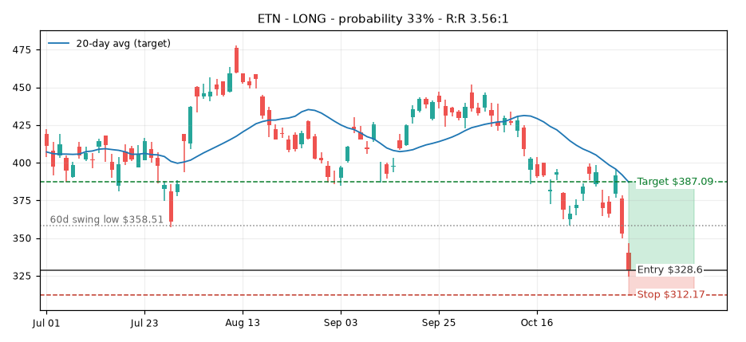
Probability 73%: no structure warnings.
Earlier signals on MPC: 2026-11-04: ⏳ still open 2026-08-25: ❌ hit stop -5.5% 2026-08-24: ❌ hit stop -5.6%
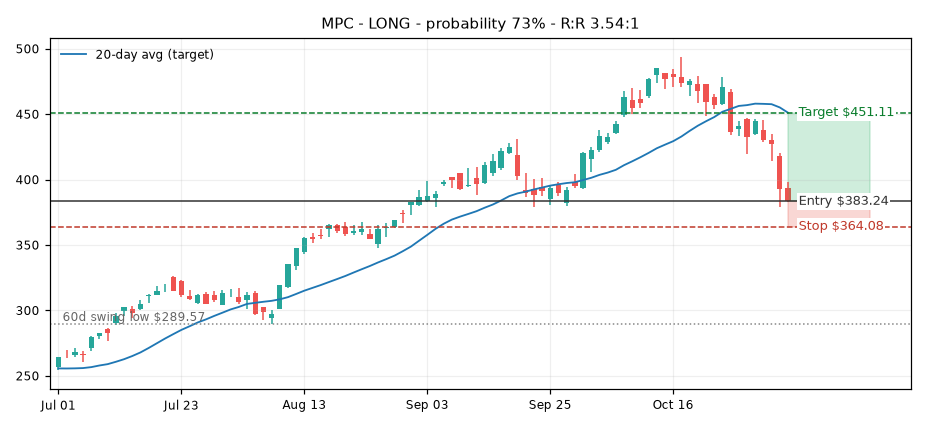
Probability 71% → 41%: broke below 60d swing low (-15); below 200-day avg, downtrend (-8); lower highs and lower lows (-7)
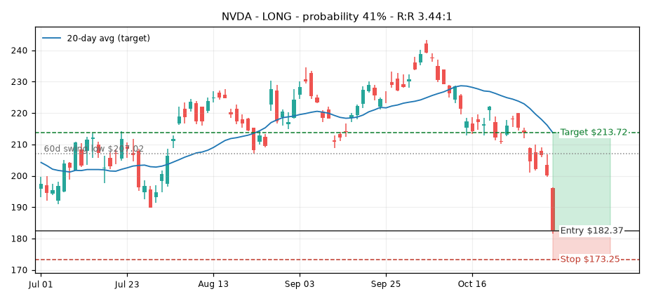
Probability 50% → 20%: broke below 60d swing low (-15); below 200-day avg, downtrend (-8); lower highs and lower lows (-7)
Earlier signals on BKR: 2026-11-04: ❌ hit stop -5.0% 2026-09-15: ⌛ expired -0.6%
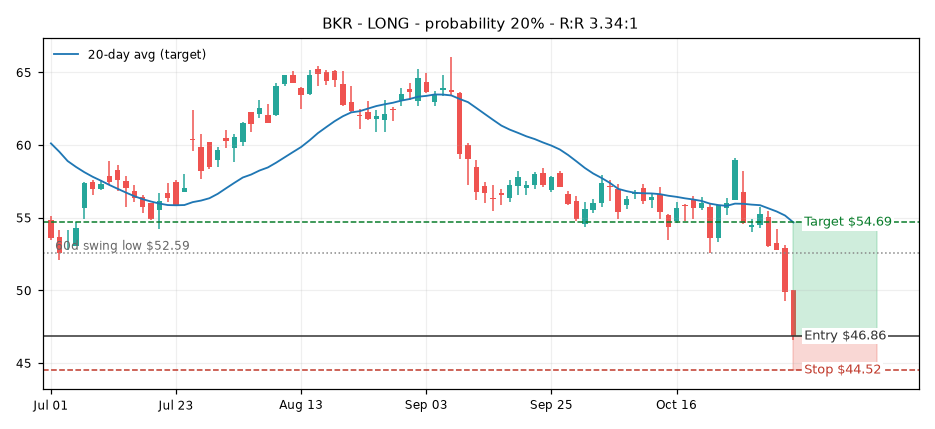
Probability 71%: no structure warnings.
Earlier signals on VLO: 2026-11-04: ⏳ still open 2026-11-02: ❌ hit stop -5.0% 2026-10-29: ❌ hit stop -5.0%
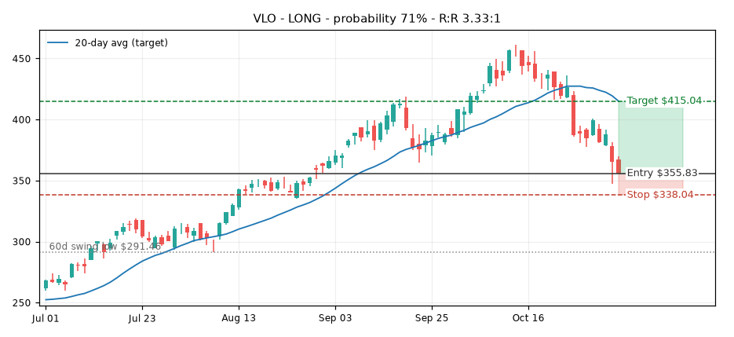
Probability 58% → 28%: broke below 60d swing low (-15); below 200-day avg, downtrend (-8); lower highs and lower lows (-7)
Earlier signals on GEV: 2026-10-23: ❌ hit stop -5.0% 2026-10-22: ❌ hit stop -5.0% 2026-08-25: ❌ hit stop -5.0%
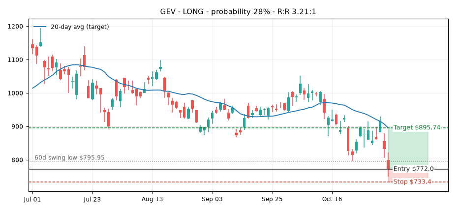
Probability 53%: no structure warnings.
Earlier signals on MOS: 2026-11-04: ❌ hit stop -5.0% 2026-10-23: ✅ hit target +12.7% 2026-10-22: ✅ hit target +14.9%
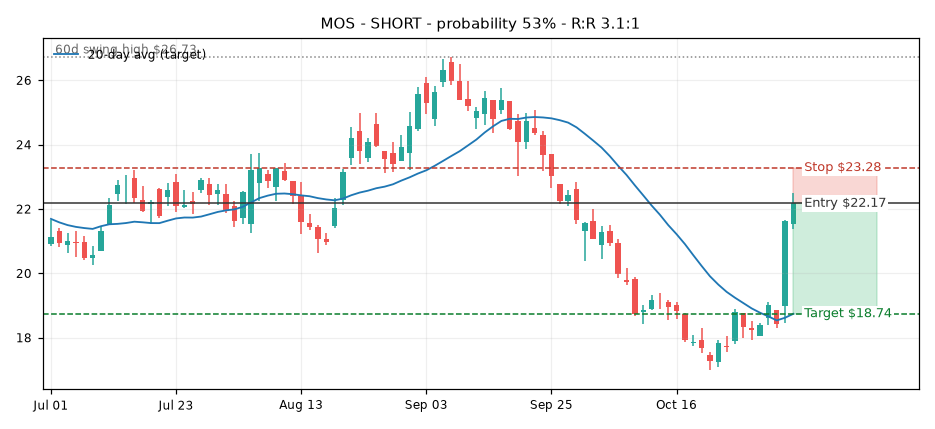
Probability 50% → 20%: broke below 60d swing low (-15); below 200-day avg, downtrend (-8); lower highs and lower lows (-7)
Earlier signals on FCX: 2026-11-03: ❌ hit stop -5.0% 2026-10-30: ❌ hit stop -5.0% 2026-08-28: ✅ hit target +10.1%
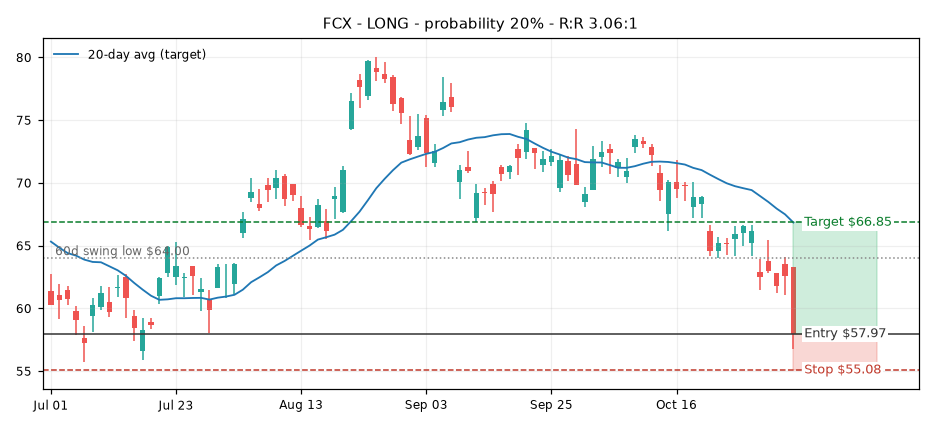
Probability 54% → 46%: above 200-day avg, uptrend (-8)
Earlier signals on GEN: 2026-11-04: ⏳ still open 2026-11-03: ⏳ still open 2026-11-02: ⏳ still open
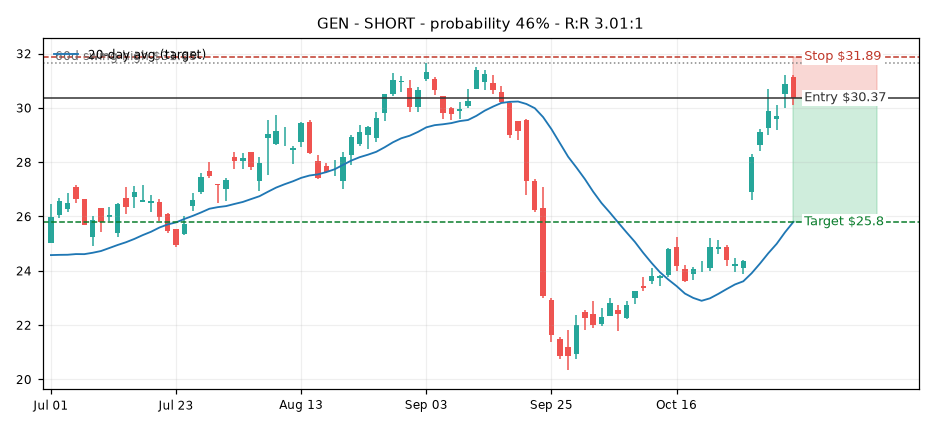
Probability 50% → 43%: higher highs and higher lows (-7)
Earlier signals on PNR: 2026-11-04: ⏳ still open 2026-11-03: ❌ hit stop -5.0% 2026-11-02: ⏳ still open
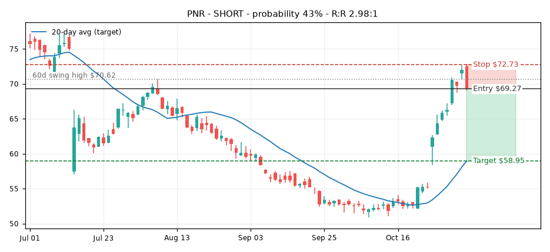
Probability 50% → 20%: broke above 60d swing high (-15); above 200-day avg, uptrend (-8); higher highs and higher lows (-7)
Earlier signals on ROP: 2026-11-04: ⏳ still open 2026-11-03: ❌ hit stop -5.5% 2026-11-02: ❌ hit stop -5.0%
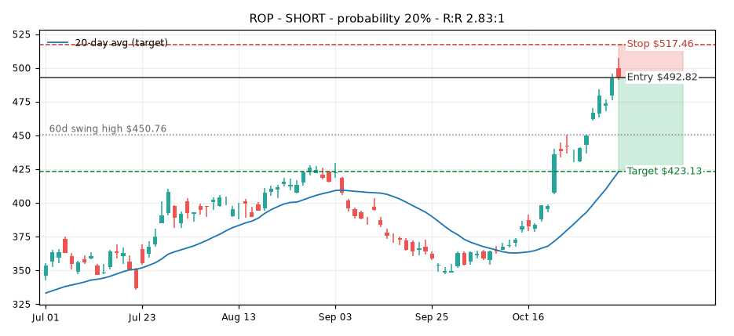
Probability 50% → 20%: broke below 60d swing low (-15); below 200-day avg, downtrend (-8); lower highs and lower lows (-7)
Earlier signals on AVGO: 2026-08-27: ❌ hit stop -5.0% 2026-08-25: ❌ hit stop -5.0% 2026-08-24: ❌ hit stop -5.0%
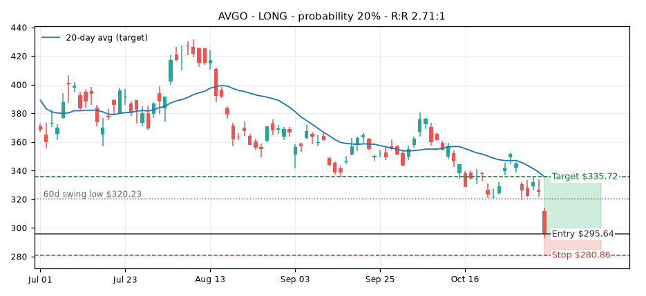
Probability 64% → 34%: broke above 60d swing high (-15); above 200-day avg, uptrend (-8); higher highs and higher lows (-7)
Earlier signals on IDXX: 2026-11-04: ⏳ still open 2026-11-03: ❌ hit stop -5.0% 2026-11-02: ❌ hit stop -5.0%
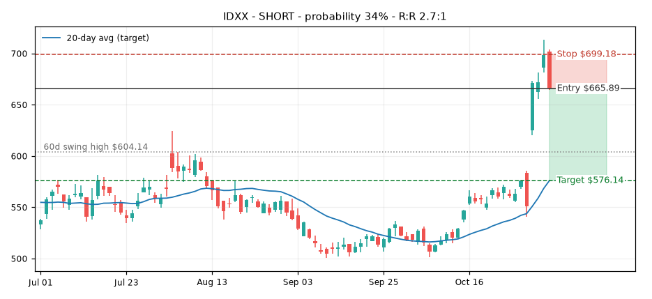
Probability 59% → 36%: broke below 60d swing low (-15); below 200-day avg, downtrend (-8)
Earlier signals on TT: 2026-11-02: ⏳ still open 2026-10-30: ⏳ still open
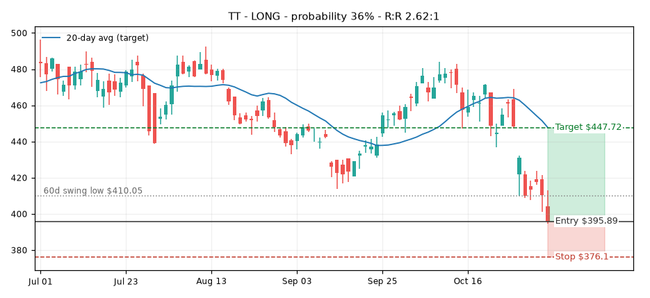
Probability 90% → 60%: broke below 60d swing low (-15); below 200-day avg, downtrend (-8); lower highs and lower lows (-7)
Earlier signals on JCI: 2026-08-25: ⌛ expired +2.9% 2026-08-24: ❌ hit stop -5.0% 2026-08-24: ❌ hit stop -5.0%
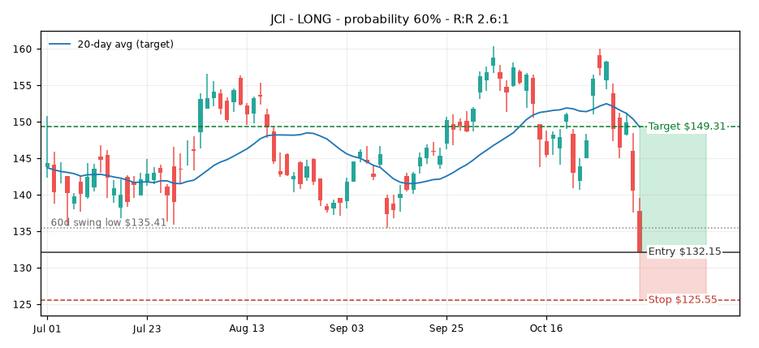
Probability 68% → 60%: above 200-day avg, uptrend (-8)
Earlier signals on CMG: 2026-11-04: ⏳ still open 2026-08-25: ✅ hit target +7.2% 2026-08-24: ❌ hit stop -5.0%
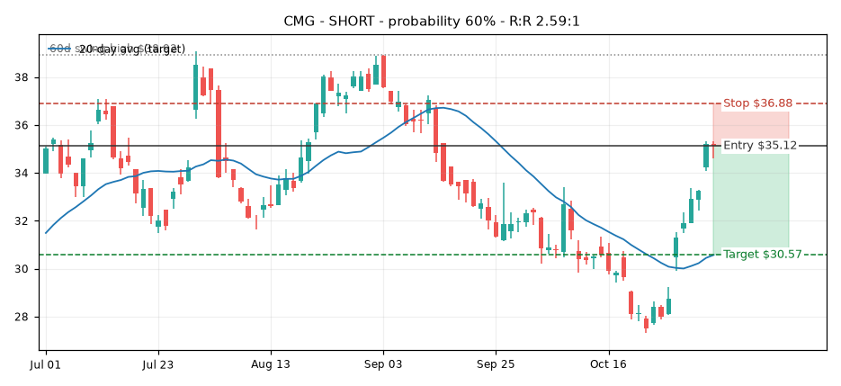
Probability 50% → 35%: below 200-day avg, downtrend (-8); lower highs and lower lows (-7)
Earlier signals on GOOGL: 2026-11-04: ⏳ still open 2026-11-03: ⏳ still open 2026-11-02: ⏳ still open
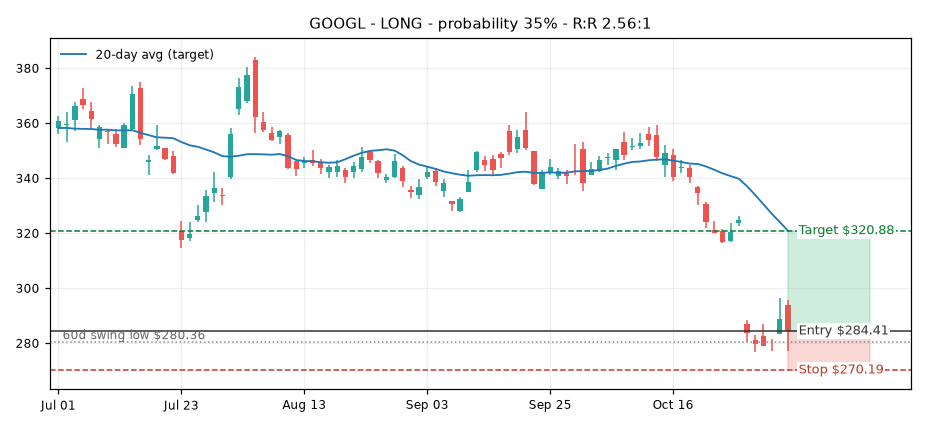
Probability 67% → 44%: broke below 60d swing low (-15); below 200-day avg, downtrend (-8)
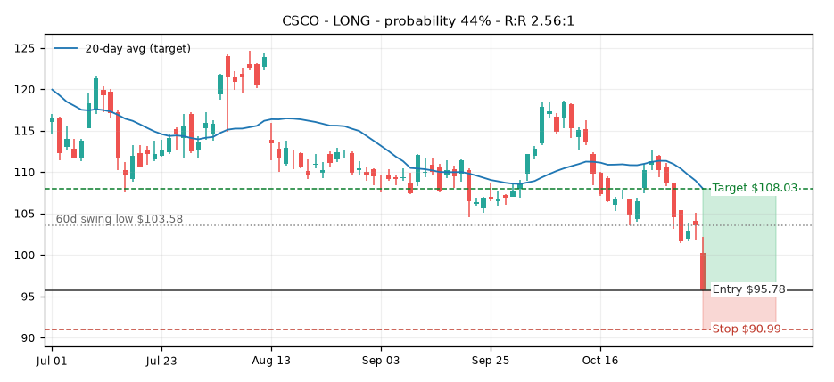
Probability 69% → 39%: broke below 60d swing low (-15); below 200-day avg, downtrend (-8); lower highs and lower lows (-7)
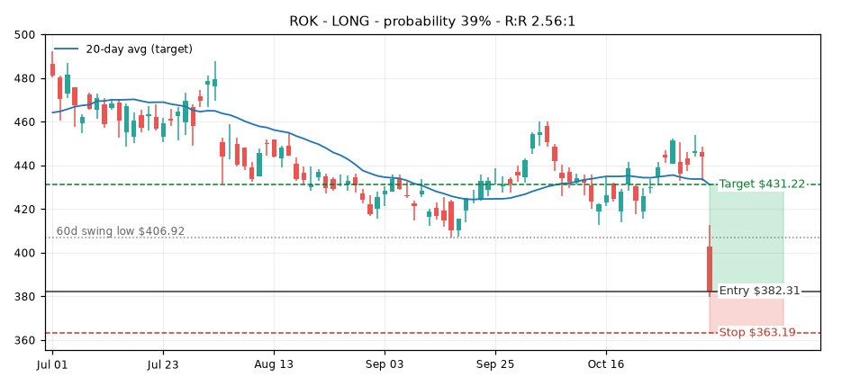
Probability 73% → 43%: broke below 60d swing low (-15); below 200-day avg, downtrend (-8); lower highs and lower lows (-7)
Earlier signals on IBKR: 2026-11-02: ⏳ still open 2026-10-30: ❌ hit stop -5.0% 2026-08-25: ✅ hit target +7.8%
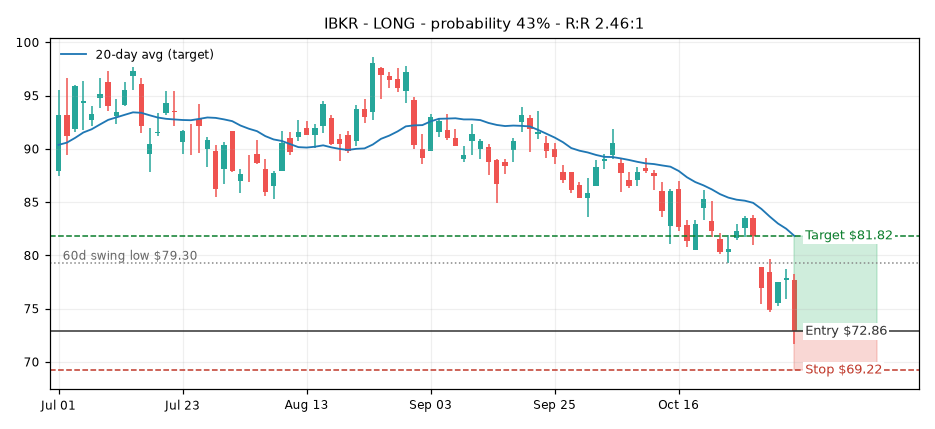
Probability 50% → 35%: below 200-day avg, downtrend (-8); lower highs and lower lows (-7)
Earlier signals on GOOG: 2026-11-04: ⏳ still open 2026-11-03: ⏳ still open 2026-11-02: ⏳ still open
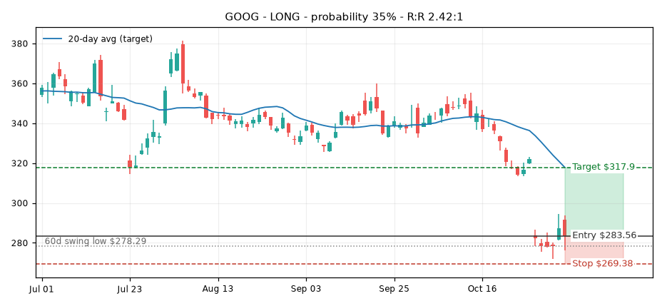
Probability 78% → 48%: broke above 60d swing high (-15); above 200-day avg, uptrend (-8); higher highs and higher lows (-7)
Earlier signals on TYL: 2026-11-04: ⏳ still open 2026-10-23: ❌ hit stop -5.0% 2026-10-22: ❌ hit stop -5.0%
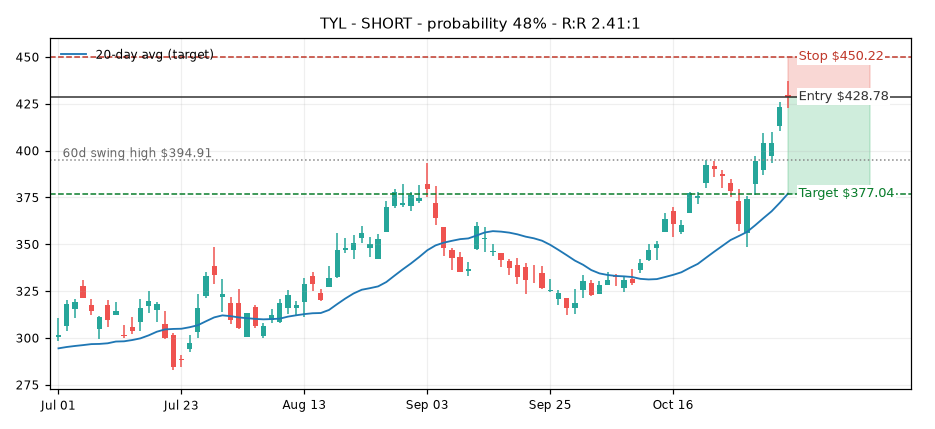
Probability 100% → 77%: broke below 60d swing low (-15); below 200-day avg, downtrend (-8)
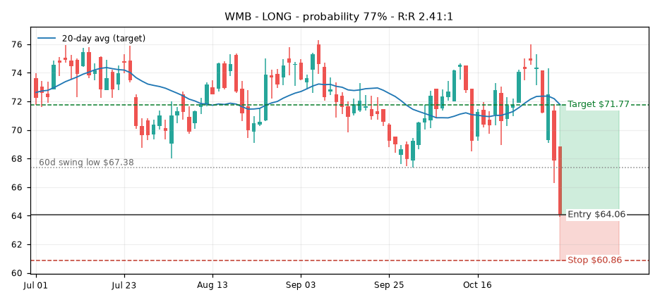
Probability 70%: no structure warnings.
Earlier signals on PSX: 2026-08-25: ❌ hit stop -5.0% 2026-08-24: ❌ hit stop -5.0% 2026-08-24: ❌ hit stop -5.0%
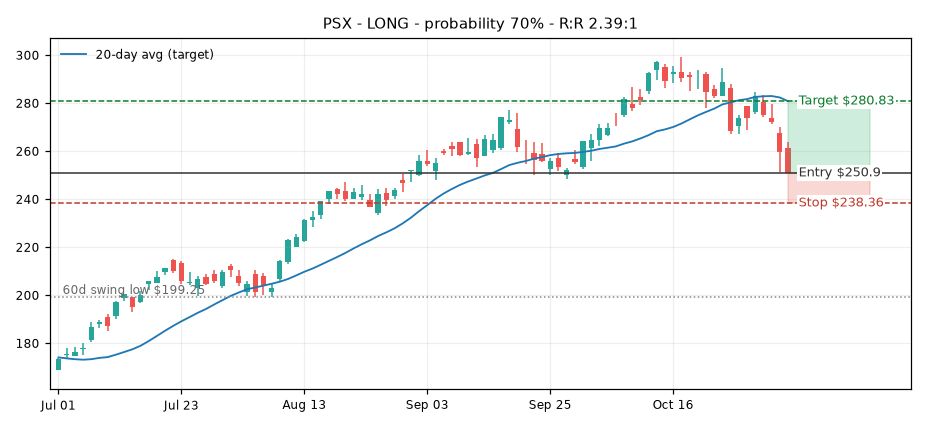
Probability 82% → 67%: above 200-day avg, uptrend (-8); higher highs and higher lows (-7)
Earlier signals on CLX: 2026-11-04: ⏳ still open 2026-09-08: ❌ hit stop -5.0% 2026-09-07: ❌ hit stop -5.0%
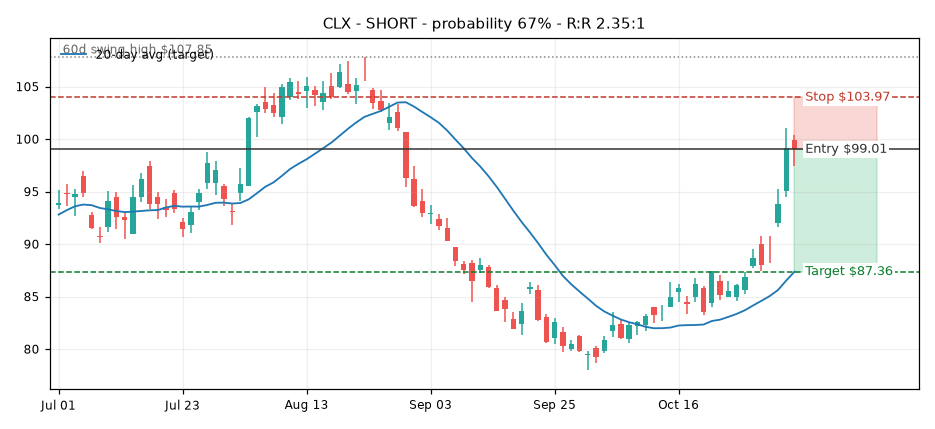
Probability 75% → 45%: broke above 60d swing high (-15); above 200-day avg, uptrend (-8); higher highs and higher lows (-7)
Earlier signals on GEHC: 2026-11-04: ⏳ still open 2026-11-03: ❌ hit stop -5.0% 2026-11-02: ❌ hit stop -5.0%
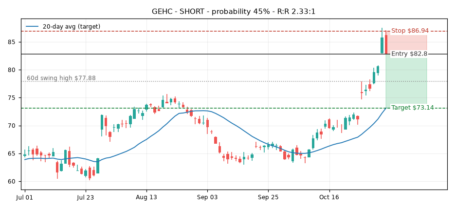
Probability 67% → 37%: broke above 60d swing high (-15); above 200-day avg, uptrend (-8); higher highs and higher lows (-7)
Earlier signals on LOW: 2026-11-04: ⏳ still open 2026-11-02: ❌ hit stop -5.0%
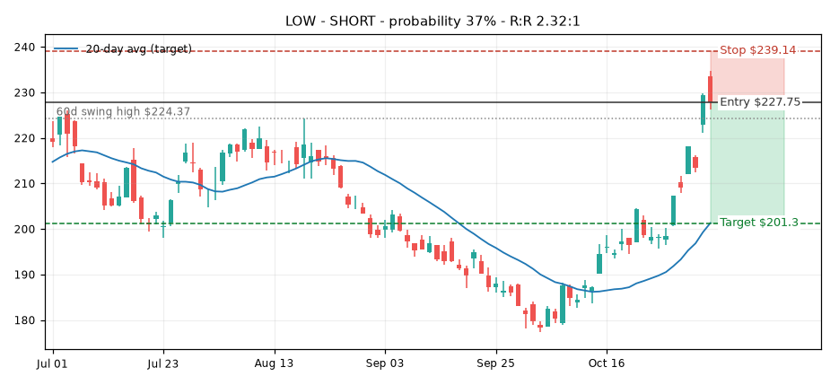
Probability 100% → 70%: broke below 60d swing low (-15); below 200-day avg, downtrend (-8); lower highs and lower lows (-7)
Earlier signals on ADM: 2026-11-04: ⏳ still open 2026-11-03: ⏳ still open
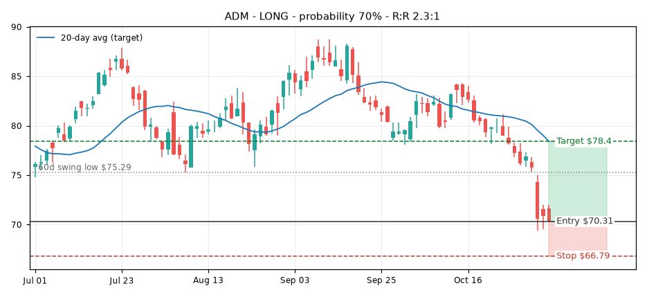
Probability 50% → 20%: broke below 60d swing low (-15); below 200-day avg, downtrend (-8); lower highs and lower lows (-7)
Earlier signals on CVS: 2026-08-24: ❌ hit stop -5.0%
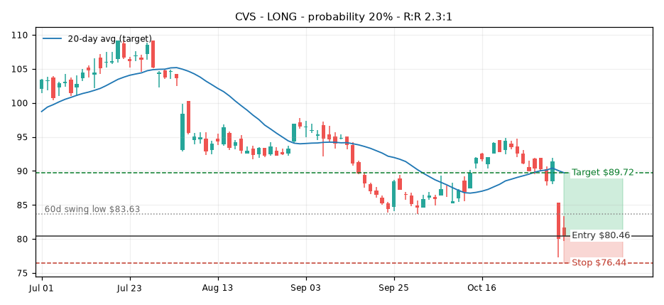
Probability 50% → 20%: broke above 60d swing high (-15); above 200-day avg, uptrend (-8); higher highs and higher lows (-7)
Earlier signals on JKHY: 2026-11-04: ⏳ still open 2026-08-25: ✅ hit target +9.0% 2026-08-24: ✅ hit target +5.9%
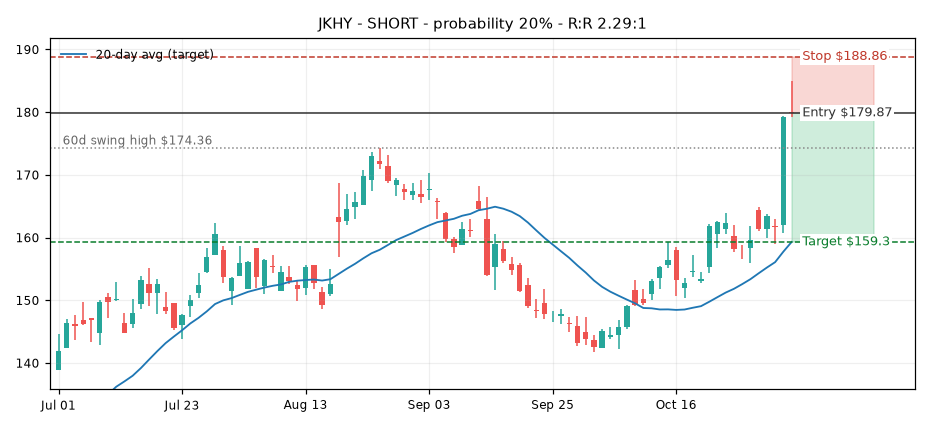
Probability 85% → 70%: above 200-day avg, uptrend (-8); higher highs and higher lows (-7)
Earlier signals on EFX: 2026-11-04: ⏳ still open 2026-11-03: ⏳ still open 2026-11-02: ⏳ still open
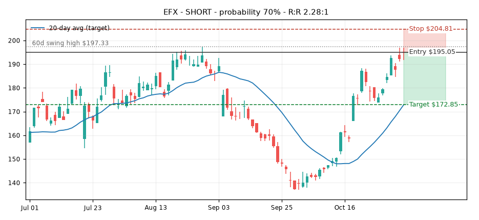
Probability 67% → 44%: broke below 60d swing low (-15); below 200-day avg, downtrend (-8)
Earlier signals on NWS: 2026-08-25: ✅ hit target +5.9% 2026-08-24: ✅ hit target +5.3% 2026-08-24: ✅ hit target +6.0%
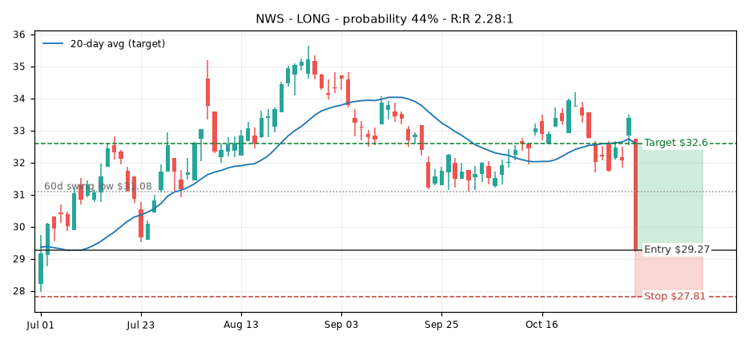
Probability 50% → 20%: broke below 60d swing low (-15); below 200-day avg, downtrend (-8); lower highs and lower lows (-7)
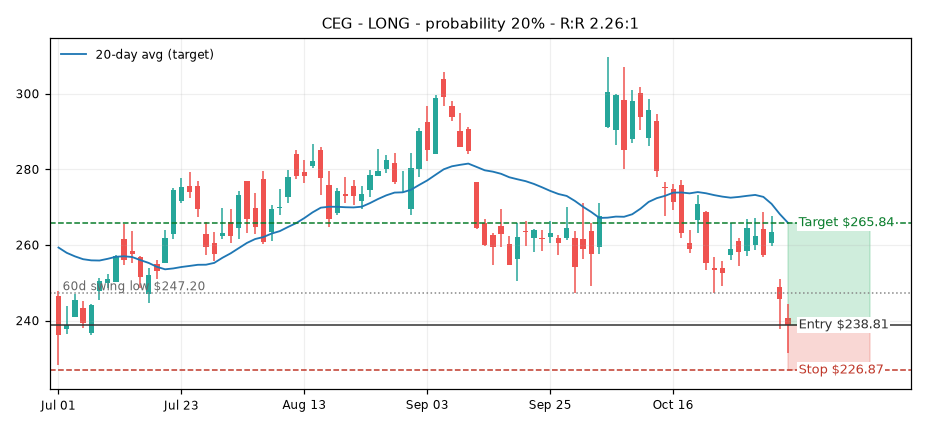
Probability 73% → 58%: below 200-day avg, downtrend (-8); lower highs and lower lows (-7)
Earlier signals on APH: 2026-10-23: ✅ hit target +12.0% 2026-10-22: ✅ hit target +15.1% 2026-09-04: ❌ hit stop -5.0%
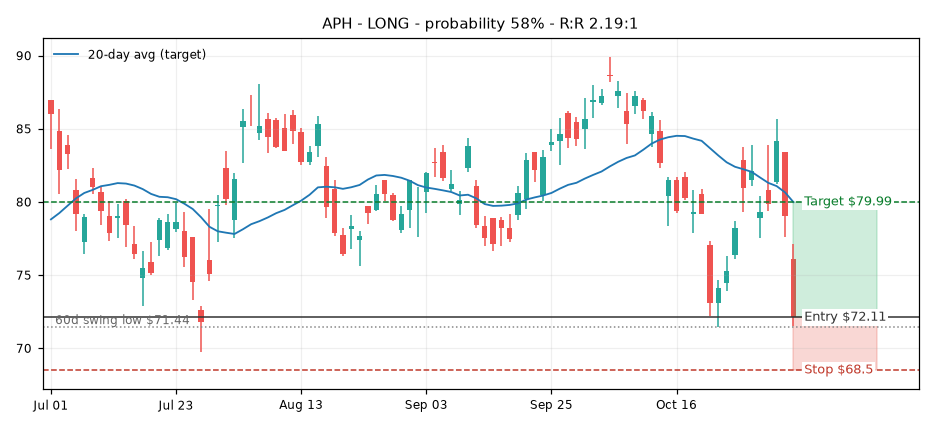
Probability 62% → 40%: broke above 60d swing high (-15); higher highs and higher lows (-7)
Earlier signals on ROL: 2026-11-04: ⏳ still open 2026-11-03: ❌ hit stop -5.0%
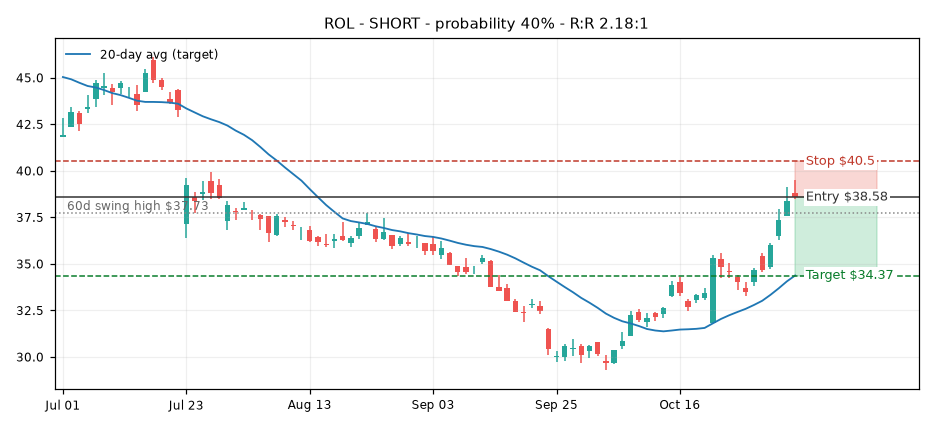
Probability 64% → 49%: broke below 60d swing low (-15)
Earlier signals on NWSA: 2026-08-25: ✅ hit target +6.0% 2026-08-24: ⌛ expired +3.7% 2026-08-24: ⌛ expired +4.9%
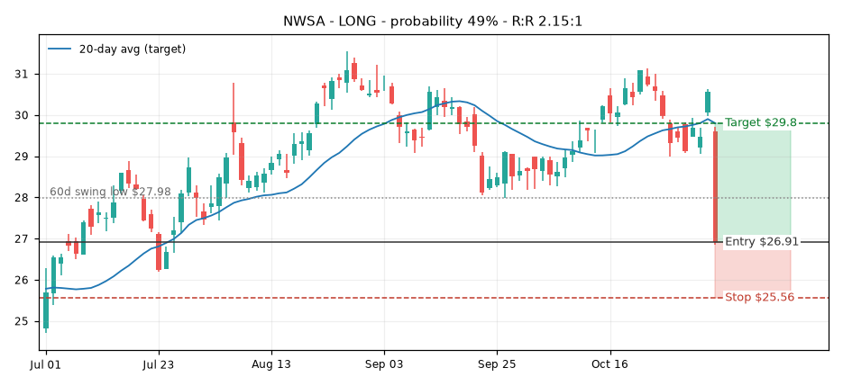
Probability 69%: no structure warnings.
Earlier signals on CPRT: 2026-11-04: ⏳ still open 2026-11-02: ⏳ still open 2026-08-25: ✅ hit target +7.5%
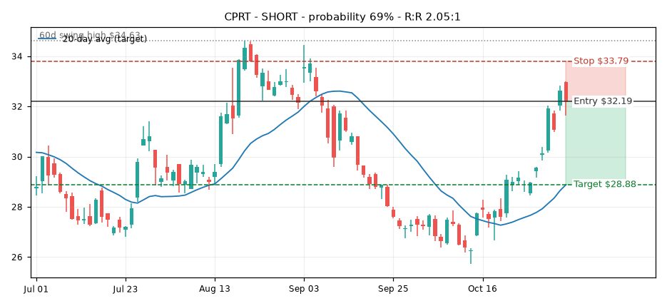
Probability 70%: no structure warnings.
Earlier signals on APA: 2026-08-24: ❌ hit stop -5.7% 2026-08-24: ❌ hit stop -6.8%
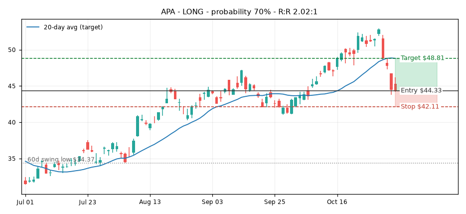
Probability 82% → 59%: broke above 60d swing high (-15); above 200-day avg, uptrend (-8)
Earlier signals on LEN: 2026-11-04: ⏳ still open 2026-11-02: ⏳ still open